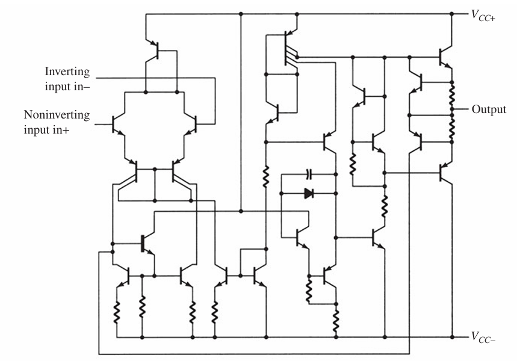
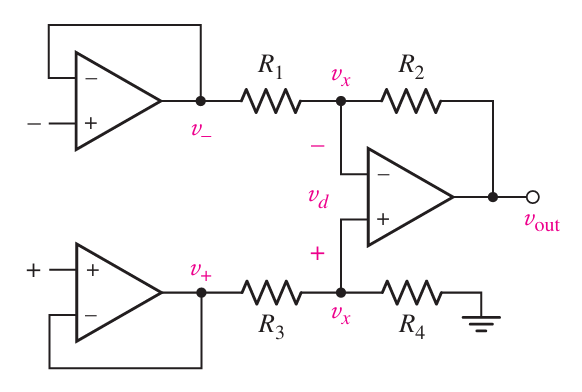

Operational Amplifier#
The operational amplifier (op-amp), originating in the 1940s with vacuum tubes, performs mathematical operations like addition and subtraction. An op-amp is a high-gain differential amplifier characterized by its high input impedance and low output impedance. The differential amplifier circuit, a fundamental configuration in integrated circuits (ICs), is widely utilized due to its versatility. As illustrated in following Figure, this circuit features two distinct inputs and outputs, with the emitters connected together. While many differential amplifier circuits rely on dual voltage supplies, they can also function with a single supply, highlighting their adaptability in various applications.
Ideal Op Amp rules state no current flows into either input terminal and there is no voltage difference between the inputs. Therefore, the input impedance of the differential amplifier must be High. As shown below with the equivalent circuit, \( R_i \) represents the input impedance in the equivalent circuit.
AC equivalent of op-amp circuit:#
Basic Op-Amp#
The basic circuit connection using an op-amp is shown in follwing Figure.
An input signal \( V_1 \) is applied to the inverting input (minus input) of the op-amp through a resistor \( R_1 \).
The output of the op-amp is fed back to the same inverting input through a feedback resistor \( R_f \).
The non-inverting input (plus input) of the op-amp is connected to ground.
For an inverting amplifier, KVL analysis gives:
First, we solve with Ideal equivalent of op-amp:
Rearranged to:
With:
Thus,
Second, we try with practical equivalent of op-amp:
After solving, with \( R_i \) approaching infinity and \( A_v \) becoming large, we arrive at the same results again.
Op-amp IC is the 741 internal circuit#

Summing amplifier#
This circuit is similar to the inverting amplifier. Proof:
Difference amplifier#
Proof: \( v_\text{out} = v_2 −v_1 \)
Noninverting Amplifier#
Proof:

CASCADED STAGES#
Proof:
Instrumentation amplifier#
Proof:
Given the relationships:
The output voltage \( v_{\text{out}} \) can be expressed as:

VOLTAGE BUFFER#
A voltage buffer circuit provides a means of isolating an input signal from a load by using a stage having unity voltage gain, with no phase or polarity inversion, and acting as an ideal circuit with very high input impedance and low output impedance.
Voltage-Controlled Current Source#
An ideal form of circuit providing an output current controlled by an input voltage is that of following Figure. The output current is dependent on the input voltage.
Current-Controlled Voltage Source#
An ideal form of a voltage source controlled by an input current is shown in following Figure. The output voltage is dependent on the input current.
Current-Controlled Current Source#
An ideal form of a circuit providing an output current dependent on an input current is shown in following Figure. In this type of circuit, an output current is provided dependent on the input current.
ACTIVE FILTERS#
Active filters are widely used in electronic circuits, leveraging operational amplifiers (op-amps) to build filter circuits with enhanced performance. While passive filters can be constructed using only resistors and capacitors, active filters incorporate an amplifier to provide voltage amplification, signal isolation, and buffering.
A low-pass filter is designed to allow signals with frequencies below a certain cutoff frequency, \( f_{OH} \), to pass while attenuating signals above this threshold, as shown in Fig. a. Conversely, a high-pass filter allows signals above a cutoff frequency, \( f_{OL} \), to pass, as idealized in Fig. b. A bandpass filter is configured to pass signals within a specific frequency range, bounded by two cutoff frequencies, as illustrated in Fig. c.
Low-Pass Filter#
A first-order, low-pass filter using a single resistor and capacitor as in following Figure. \( A_v = 1 + \frac{R_F}{R_G} \)
at a cutoff frequency of
\( f_{OH} = \frac{1}{2\pi R_1 C_1} \)